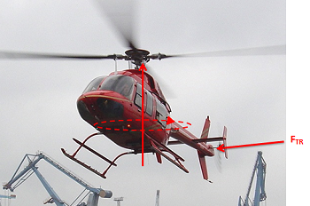
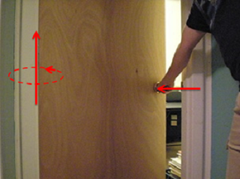

Moments
A moment, also called "torque" or the "moment of a force", is the tendency of a force to rotate an object about an axis. A moment can be thought of as a twisting force, like the influence of a screwdriver exerted onto a screw. Where pure forces result in linear accelerations, pure moments result in angular accelerations. A combination of forces and moments (as is most often the case in real world systems) will cause both linear acceleration and angular acceleration.

Any force acting on an extended body whose line of action does not pass through either a) the center of mass if the body is unconstrained or b) the allowed axis of rotation if the body is constrained will result in a moment. In the diagram below you can see examples of forces exerting moments on unconstrained and constrained bodies.
|

The controlled force exerted by the spinning tail rotor on this helicopter allows it to rotate about its center of mass.
|

The force exerted by this person's hand causes a moment to be exerted on the door about the hinges the door will rotate around.
|
Like forces, moments exerted on bodies can cause those bodies to deform of even break if strong enough. In particular, moments will tend to bend or twist bodies.
Moments can be classified by three characteristics. These characteristics are the magnitude of the moment, the axis of rotation, and the direction of rotation. These three factors will define how the moment will affect the body or bodies it is applied to. Moments are often shown as vectors (as in the diagram below) and magnitude, axis or rotation and direction of rotation can be determined from the vector representation of the moment.
Magnitude:
The magnitude of a moment is the degree to which the moment will accelerate (angular acceleration) the body it is acting on. It is represented by a scalar (a single number). The magnitude of the moment can be thought of as the strength of the twisting force exerted on the body. When a moment is represented as a vector, the magnitude of the moment is usually explicitly labeled. The length of the moment vector also often corresponds to the relative magnitude of the moment, with longer vectors representing higher magnitudes.
The magnitude of the moment is measured in units of force times distance. The standard metric units for the magnitude of moments are newton meters, and the standard English units for a moment are foot pounds.
\[ \mathrm{ Moment = force * distance }\] \[ \mathrm{ \text{Metric: N m} }\] \[ \mathrm{ \text{English: ft lbs} }\]Axis of Rotation:
The axis of rotation of the moment is indicated by the line of action of the moment vector. Knowing the axis of rotation is not enough however because the body can rotate in two opposite ways around this axis (clockwise and counterclockwise).
A couple, a special type of moment which will be discussed later, has an axis of rotation that can be translated without affecting the system, only the direction of the axis of rotation is important. Non-couple moments are dependent upon the placement of the axis of rotation however so both location and direction are important.
Direction of Rotation:
To deduce the direction of the rotation of the moment (clockwise or counter clockwise about the axis of rotation) you can use the right hand rule. Using your right hand, you will curl your fingers up around the axis of rotation, pointing your fingertips in the direction of the twisting force. If you stick your thumb out it will indicate the direction of the moment vector (which should line up with the axis of rotation). This can also be done in reverse, if you stick your right thumb in the direction of the moment vector, your curled fingers can be used to determine the twisting direction of the moment. In this way, the direction of the moment vector along the axis of rotation denotes the direction of rotation of the moment.
 |
| Author: Jacob Moore has liscenced this work under a Creative Commons Attribution-NonCommercial 3.0 Unported License. |